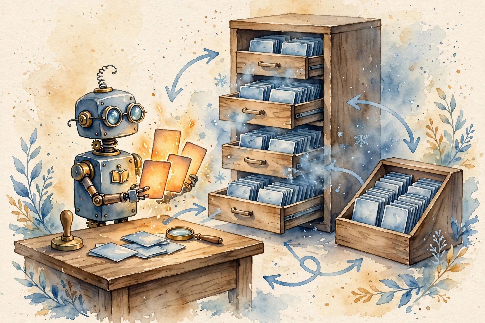
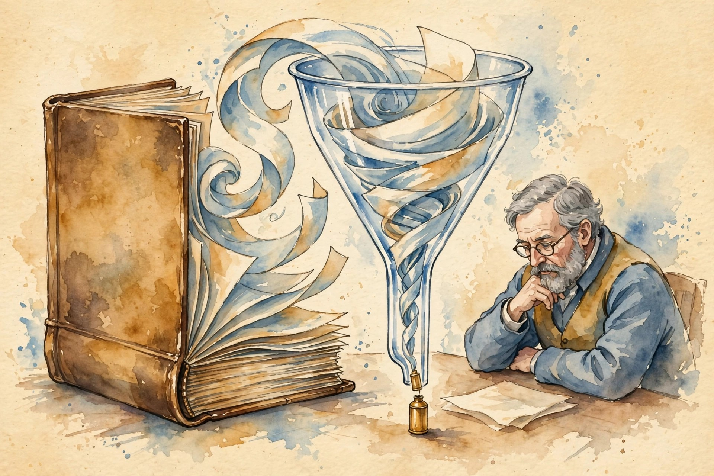
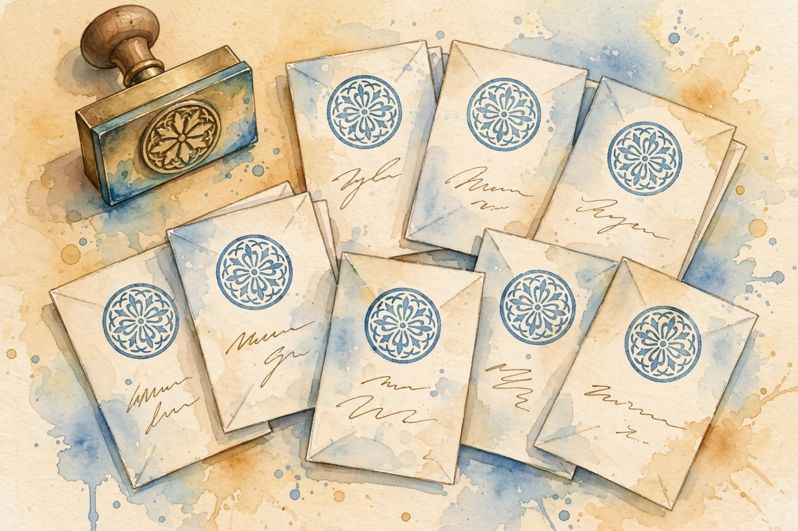

Narrated from the lesson document
The model cannot hold everything, so memory is a hierarchy: hot facts in context, warm facts in an index, cold facts in a store. This companion walks Unit 06: MemGPT paging, KV cache reuse, Cartridges, retrieval inside the loop, and the compression, invalidation, privacy, and proof discipline that keeps memory honest.
From the lesson The idea, and every number beside it, comes from the cited section of u06_memory_caches.md. The phrasing is the companion’s.
Illustration Invented by the companion: an analogy, a toy with made-up values, or a what-if. Never lecture content.
companion Companion voice: the idea above the tag is from the lesson. The generalization below it is the companion’s.
Provenance: no full lecture transcript exists for session 14. This page narrates the lesson document content/v2/cs329a/lessons/u06_memory_caches.md, not a video. Paper titles come from the official schedule through the lesson. The builder did not inspect paper contents. The guest session (Junchen Jiang, LMCache) is taught at schedule-line level only, per the lesson’s own honesty note. Toy numbers are the lesson’s own computed values, re-plotted here with section citations. Claim class: SOURCE ATTRIBUTION PENDING on paper pointers. Toys are computed and traceable. No benchmark numbers are claimed.

From the lessonC01 §3
Treat the context window like RAM and the rest like disk. Main context holds what the agent needs now: system instructions, the recent messages, and a working scratchpad it can rewrite. Archival storage holds everything else, and recall storage holds summaries that point at it. When RAM fills, the agent pages things out itself, with function calls, instead of crashing.
From the lessonC01 §2, §6
The toy: the conversation is 20 turns long but the context holds 8 items. Turns 1-8 fill it. Turns 9-20: each arrival evicts the oldest non-pinned item to archival storage. Final state: 8 in main context, 12 in archival, 0 lost. Eviction count: 12. If turns 13-20 are later needed, the agent searches archival storage and pages them back.
From the lessonC01 §6 Move the turns slider. The toy pages the lesson’s queue.
From the lessonC02 §3
The agent has hands for its memory. Core hands rewrite the scratchpad: append a note, replace a line. Archival hands store and search the big pile. Every hand is a typed function call with arguments the model fills in. The trace of calls is the audit trail of what the agent remembered.
From the lessonC02 §2, §6
The toy: a 20-turn trace. Actions: core appends 8 (notes taken), archival inserts 12 (evicted facts), archival searches 5 (facts needed again), core replaces 2 (notes updated). Total memory actions: 27. The action log shows exactly what the agent chose to keep.
From the lessonC02 §6 Step through the trace in blocks of 5 turns.
| Action | Count |
|---|
From the lessonC03 §3
Context is the desk, persistence is the filing cabinet. The desk holds what this turn needs: small, fast, expensive per token. The cabinet holds everything: big, slow, cheap per byte. The paging rule decides what earns desk space: pinned facts always, hot facts usually, cold facts never until searched.
From the lessonC03 §2, §6
The toy: 100 facts, room for 8. Pinned: 3 (role, task, user name). Hotness ranking of the rest: top 5 take the remaining desk slots. Desk: 8 facts. Cabinet: 92 facts. Retrieval cost per cold fact: one search call. If a cold fact is needed twice, its lifetime cost is 2 searches versus permanent desk rent: the rule keeps it in the cabinet.
From the lessonC03 §6 Move the sliders. The toy applies the lesson’s paging rule.

From the lessonC04 §3
A cartridge is a compressed memory of one corpus, learned offline. Instead of re-reading the manual at every query, the model loads the cartridge (a small trained KV prefix) and answers from it. The training recipe is called self-study: the model quizzes itself about the corpus, generating synthetic conversations, then distills the full-context behavior into the small cache.
From the lessonC04 §2, §6
The toy: corpus N = 20,480 tokens, cartridge p = 512 slots. KV memory ratio: 20,480 / 512 = 40. The cartridge holds 40x fewer slots than the full prefill. Training cost is paid once. With 1,000 queries against the manual, the per-query training share is 1/1000 of the one-time cost.
From the lessonC04 §6 Move the sliders. The toy computes the lesson’s compression ratio.

From the lessonC05 §3
The KV cache is the model’s notes on the prompt so far. When a new prompt starts with text the model has already processed, the old notes are still valid: attention over the same prefix gives the same keys and values. Reuse is a lookup, not a recompute.
From the lessonC05 §2, §6
The toy: 100 requests share the same 2,000-token system prompt, 500 fresh tokens each. Without reuse: 100 × 2,500 = 250,000 prefill tokens. With reuse: 2,000 + 100 × 500 = 52,000. Saved: 198,000 tokens, about 79 percent of prefill. The cache stores one 2,000-token KV block.
From the lessonC05 §6 Move the sliders. The toy applies the lesson’s reuse arithmetic.
From the lessonC05 §1 Honesty note: the guest session (Junchen Jiang, LMCache) is taught at schedule-line level only. The lesson names the system, not its internals.
From the lessonC06 §3
Splicing cached chunks in a new order is almost right but not quite: each chunk’s KV was computed without seeing its new neighbors, so cross-attention is gone. The fix is surgical: find the tokens whose KV values moved the most once the neighbors are visible (high-KV-deviation tokens, about 10-15 percent), recompute only those, and keep the rest. A small repair buys back full-prefill quality.
From the lessonC06 §2, §6
The toy: 4 chunks of 512 tokens = 2,048 tokens. Recompute only 15 percent (307 tokens) plus a 64-unit quality check: 371 units versus 2,048, about a 5.5x cut. Ratio: 2,048 / 371 = 5.52. The bill is one-fifth, the quality is the full-prefill quality by the mechanism’s claim (attribution pending, the toy checks the arithmetic not the claim).
From the lessonC06 §6 Move the slider. The toy applies the lesson’s recompute arithmetic.
From the lessonC07 §3
Retrieval is the agent’s eyes on its own past. The query goes out, ranked documents come back, the agent reads the top few. Precision asks: of what came back, how much was useful. Recall asks: of what exists, how much came back. Agents usually need precision more: one wrong fact poisons the trace, one missed fact just costs another query.
From the lessonC07 §2, §6
The toy: 50 candidate docs, 8 relevant. The retriever returns 5, of which 3 are relevant. Precision: 3/5 = 0.60. Recall: 3/8 = 0.375. The agent reads 5 docs and gets 3 useful facts. A second query with new terms could raise recall. It cannot fix the 2 noise docs already read except by judging them.
From the lessonC07 §6 Move the sliders. The toy applies the lesson’s precision/recall arithmetic.
From the lessonC08 §3
Compression is amnesia on purpose. A summary keeps the gist and drops the details. The dropped details are gone: no clever prompt gets them back from the summary. The only honest way to handle loss is to measure it: log what was dropped, and check later whether anything dropped was needed.
From the lessonC08 §2, §6
The toy: 10 facts, summary keeps 3, drops 7. Later need: 4 facts, of which 2 were dropped. Loss: 2. Loss rate over needed facts: 2/4 = 0.50. The summary looked fine until the need arrived. The drop log names the 2 lost facts, so the fix is targeted: keep that fact class next time.
From the lessonC08 §6 Move the sliders. The toy applies the lesson’s loss arithmetic.
From the lessonC09 §3
Memory rots. Facts have a shelf life, and the cache does not know it. Invalidation is the expiry date: a time-to-live on each fact, after which the agent must re-fetch. Version stamps are the stronger form: the fact carries the version of the world it came from.
From the lessonC09 §2, §6
The toy: 100 cached facts, 10 go stale per week. With no invalidation, after 2 weeks about 20 facts are wrong, so 20 percent of answers from cache are wrong. A 7-day TTL caps the damage: facts older than a week are re-fetched, stale share at most about 10 percent, at the cost of re-fetching the 90 fresh ones weekly too. The tradeoff is visible in one number each.
From the lessonC09 §6 Move the slider. The toy applies the lesson’s rot arithmetic.
From the lessonC10 §3
A cache is a shared room. Without walls, one tenant’s notes are readable from another tenant’s chair. The wall is a namespace: every cached entry carries its owner, and a lookup matches the owner first. Sharing across tenants needs explicit consent and a scrubbed, owner-free entry.
From the lessonC10 §2, §6
The toy: two tenants share one cache server. Can tenant B’s query reuse tenant A’s KV block? Yes by bytes, no by policy. The block contains A’s prompt text. Reuse leaks it. Toy: 2 tenants, 1,000 requests each, shared 2,000-token system prompt. Namespaced cache: each tenant caches its own copy, 2 blocks stored. A shared public entry: 1 block stored, both hit it. Saving from sharing: 1 block. The saving is tiny and the risk of a mislabeled entry is a breach: the rule is deny by default.
| Rule | Blocks stored | Leak risk |
|---|---|---|
| namespaced (deny by default) | 2 | none |
| shared public entry | 1 | breach if mislabeled |
From the lessonC11 §3
Memory compounds across tasks when the world is shared. The agent starts task B with A’s notes instead of a blank page. Transfer helps when the tasks share the world and hurts when they share only the words: stale or task-specific facts become confident wrong answers.
From the lessonC11 §2, §6
The toy: task A learned 20 facts. Task B needs 12 facts, 8 of which overlap. Transfer saves 8 retrievals. But 3 of A’s facts are stale for B and cause 1 wrong step. Net: +8 fetches saved, 1 step lost. Saved fetches: 8 (about 8 minutes). Wrong step cost: 5 minutes. Net: 8 − 5 = +3 minutes. Positive but thin: transfer needs the staleness check to stay positive.
From the lessonC11 §6 Move the sliders. The toy applies the lesson’s transfer arithmetic.
From the lessonC12 §3
Ablate the memory. Run the same tasks, the same agent, the same seeds, with the memory on and off. The difference is the memory’s contribution. Everything else is a confound: a better prompt, easier tasks, a luckier seed. The comparison is the only thing that separates the mechanism from the story.
From the lessonC12 §2, §6
The toy: 50 tasks. Agent with memory: 0.72. Same agent, memory off: 0.58. Delta: 0.14. Standard error of the delta: SE = sqrt(0.72×0.28/50 + 0.58×0.42/50) = sqrt(0.004032 + 0.004872) = sqrt(0.008904) = 0.0944. The 95 percent interval: 0.14 ± 1.96×0.0944 = 0.14 ± 0.185, which covers 0. The toy says: promising, not proven, run more tasks.
From the lessonC12 §6 Move the slider. The toy applies the lesson’s ablation arithmetic.
The arc, end to end. The context window is RAM, and the model pages itself (C01). Memory work is function calls with an audit trail (C02). The paging rule puts a fact on the desk only when its reuse beats the retrieval cost (C03). Cartridges distill a whole corpus into 512 slots (C04). Prefix reuse skips the same computation exactly (C05). CacheBlend fixes only the few tokens the new order corrupted (C06). Retrieval inside the loop wants precision first (C07). Compression is measured amnesia with a drop log (C08). TTLs bound the rot (C09). Tenant namespaces wall the shared cache (C10). Cross-task memory compounds when the world is shared (C11). The matched ablation separates the mechanism from the story (C12).
companion Where the unit points next: the paging discipline of C01 is U05 C06’s interface idea applied to memory, and the ablation proof of C12 is the experimental method that U08’s long-horizon evaluation depends on.
Every lesson on this page, in order. Tap one to return to its chapter.